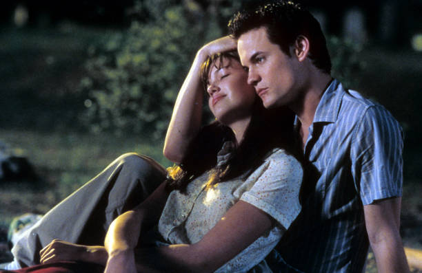

He was seventeen. Reckless, popular, and utterly unprepared for the girl who would change his life.
Landon Carter had coasted through high school on charm, mischief, and a name that meant something in Beaufort, North Carolina. He didn't care about tomorrow. He barely cared about today. His world was loud, careless, and shallow—until he was forced into the school play.
It was the punishment, really. Some prank gone too far. He needed the credit to graduate. And she was the only girl left to ask for help.
Jamie Sullivan.
The preacher’s daughter. Quiet, modest, always with a Bible in her hand and an earnestness that made her a constant target. She wore the same sweaters every week, didn't care about makeup or popularity, and never, ever seemed to mind that no one understood her.
She was everything Landon wasn’t.
He didn't want to talk to her. He didn’t want anyone seeing them together. But she agreed to help him—on one condition.
“You have to promise you won’t fall in love with me.”
He laughed. He rolled his eyes. But he agreed.
They rehearsed lines under moonlight, away from the judgment of their peers. And something began to shift. He started to see the girl behind the quiet. He saw the kindness in her hands, the calm in her voice, the light in her eyes when she spoke of stars and faith and things that Landon had never really believed in.
Then opening night came.
Jamie walked onstage in a simple white dress, her hair down, her voice like velvet. And Landon forgot every line. She didn’t just act—she glowed. The girl no one saw was suddenly all anyone could see.
And Landon... was in awe.
He walked her home after rehearsals. He listened when she spoke. He defended her when his friends whispered behind her back. And before he could even name the feeling, it had rooted itself inside him.
He was falling in love.
But Jamie kept her distance. She’d smile and then pull away. She’d brush his hand and then hide hers. And Landon, unsure, began to question everything—about her, about himself, about what it meant to truly care.
One evening, after a long walk under the cold December sky, he told her the truth.
“I’m in love with you.”
And Jamie cried.
Because Jamie had a secret.
She was dying.
Leukemia.

She hadn’t told anyone but her father. She hadn’t wanted pity. She hadn’t expected to fall in love, especially not with someone like Landon. But somehow, against the odds, she had.
And time was running out.
Landon could have walked away. He could have let fear pull him back into the safety of his old life.
But he didn’t.
He stayed.
He took her to places she dreamed of seeing. He built her a telescope to watch the stars. He danced with her in the middle of nowhere. He read to her when she was too tired to speak. And each moment became a lifetime.
Jamie grew weaker.
But Landon grew stronger.
He prayed for the first time. He asked God to give her more time. He asked God to take him instead.
But her path had been written.
On a soft spring morning, on the steps of the church where her father had preached for decades, Landon asked Jamie to marry him.
She said yes.
Their wedding was small, sacred, and filled with the kind of love that no time could limit. She walked down the aisle slowly, held up by faith and the boy who had once been lost.
They had only a few more weeks together as husband and wife.
But they were enough.
Jamie passed away, gently, like a prayer fading into silence.
Landon never stopped loving her. She had changed him in ways that even time couldn't undo. He went to college, he became a doctor, he tried to live a life that would have made her proud.
And every spring, when the dogwoods bloomed, he returned to Beaufort. He walked the roads they once walked. He looked up at the stars they once named.
He never remarried.
Because some loves come only once.
And even now, years later, he believed.
That hers was a love so deep, so true, that it had left a mark on his soul forever.
It was, and always would be…
A walk to remember.